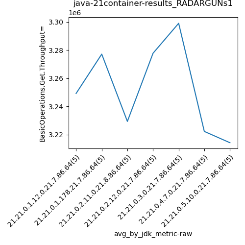
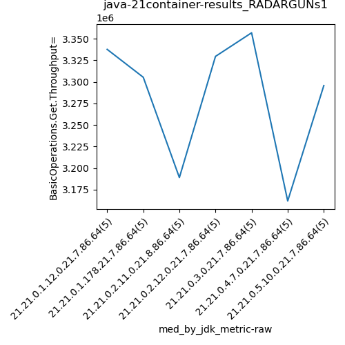
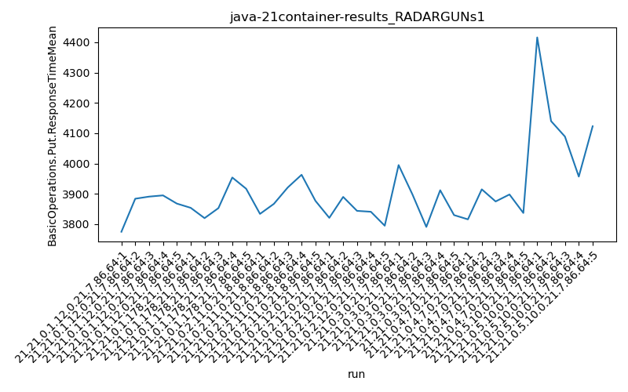

java-21 RADARGUNs1
Context at bottom
/home/jvanek/git/benchmarks-in-nested-virtualisation-toolchain/final_results/container_results/container-results_J2DBENCH
java-21
RADARGUNs1
/home/jvanek/git/benchmarks-in-nested-virtualisation-toolchain/final_results/container_results/container-results_RADARGUNs3
java-21
RADARGUNs1
/home/jvanek/git/benchmarks-in-nested-virtualisation-toolchain/final_results/container_results/container-results_RADARGUNs1
java-21
RADARGUNs1
container-results_RADARGUNs1
- container-results_RADARGUNs1 - throughput get
- container-results_RADARGUNs1 - throughput put
- container-results_RADARGUNs1 - response mean time get
- container-results_RADARGUNs1 - response mean time put
container-results_RADARGUNs1 - throughput get
Expected number of java-21 JDKs: 7
1st avgmed_alljdks_metric:
/home/jvanek/git/benchmarks-in-nested-virtualisation-toolchain/final_results/result_processing.py /home/jvanek/git/benchmarks-in-nested-virtualisation-toolchain/final_results/container_results/container-results_RADARGUNs1 BasicOperations.Get.Throughput= False
values: [3355224, 3164593, 3348496, 3040037, 3337746, 3167512, 3121420, 3415320, 3375842, 3305391, 3189074, 3390677, 3391568, 3050533, 3125095, 3113075, 3396516, 3329599, 3108044, 3441304, 3356972, 3408246, 3130490, 3399571, 3199510, 3161911, 3120363, 3360243, 3390140, 3078834, 3042160, 3295754, 3312513, 3104478, 3316530]

Expected number of iterations: 5
final number of values: 35 out of 35
Pass rate: 100.0%
values: (3040037, 3441304, 3252708.0285714287, 3305391)

** accuracy from all jdks and runs
more is better
MIN: 3040037
MAX: 3441304
AVG: 3252708.0285714287
MED: 3305391
Relative differences 1:
MIN-MAX: 12.0 %
MIN-AVG: 7.0 %
MIN-MED: 8.0 %
MAX-MIN: -13.0 %
MAX-AVG: -6.0 %
MAX-MED: -4.0 %
AVG-MED: 2.0 %
stored to java-21.properties. sort | uniq that!
2nd avgmed_by_jdk_metric:
values: [3249219.2, 3277097.0, 3229389.4, 3277707.6, 3298957.8, 3222298.2, 3214287.0]

values: [3337746, 3305391, 3189074, 3329599, 3356972, 3161911, 3295754]

values: (3214287.0, 3298957.8, 3252708.0285714283, 3249219.2)
values: (3161911, 3356972, 3282349.5714285714, 3305391)

** accuracy from all jdks where runs were avged
more is better
MIN: 3214287.0
MAX: 3298957.8
AVG: 3252708.0285714283
MED: 3249219.2
Relative differences 1:
MIN-MAX: 3.0 %
MIN-AVG: 1.0 %
MIN-MED: 1.0 %
MAX-MIN: -3.0 %
MAX-AVG: -1.0 %
MAX-MED: -2.0 %
AVG-MED: -0.0 %
stored to java-21.properties. sort | uniq that!
** accuracy from all jdks where runs were medianed
more is better
MIN: 3161911
MAX: 3356972
AVG: 3282349.5714285714
MED: 3305391
Relative differences 1:
MIN-MAX: 6.0 %
MIN-AVG: 4.0 %
MIN-MED: 4.0 %
MAX-MIN: -6.0 %
MAX-AVG: -2.0 %
MAX-MED: -2.0 %
AVG-MED: 1.0 %
stored to java-21.properties. sort | uniq that!
container-results_RADARGUNs1 - throughput put
Expected number of java-21 JDKs: 7
1st avgmed_alljdks_metric:
/home/jvanek/git/benchmarks-in-nested-virtualisation-toolchain/final_results/result_processing.py /home/jvanek/git/benchmarks-in-nested-virtualisation-toolchain/final_results/container_results/container-results_RADARGUNs1 BasicOperations.Put.Throughput= False
values: [838819, 791118, 837136, 760068, 834404, 791937, 780373, 853830, 843955, 826398, 797219, 847751, 847787, 762626, 781296, 778224, 849158, 832448, 777097, 860295, 839308, 852158, 782660, 849881, 799770, 790487, 780064, 839980, 847543, 769723, 760515, 823955, 828014, 776126, 829136]

Expected number of iterations: 5
final number of values: 35 out of 35
Pass rate: 100.0%
values: (760068, 860295, 813178.8285714285, 826398)

** accuracy from all jdks and runs
more is better
MIN: 760068
MAX: 860295
AVG: 813178.8285714285
MED: 826398
Relative differences 1:
MIN-MAX: 12.0 %
MIN-AVG: 7.0 %
MIN-MED: 8.0 %
MAX-MIN: -13.0 %
MAX-AVG: -6.0 %
MAX-MED: -4.0 %
AVG-MED: 2.0 %
stored to java-21.properties. sort | uniq that!
2nd avgmed_by_jdk_metric:
values: [812309.0, 819298.6, 807335.8, 819444.4, 824755.4, 805559.4, 803549.2]

values: [834404, 826398, 797219, 832448, 839308, 790487, 823955]

values: (803549.2, 824755.4, 813178.8285714285, 812309.0)
values: (790487, 839308, 820602.7142857143, 826398)
** accuracy from all jdks where runs were avged
more is better
MIN: 803549.2
MAX: 824755.4
AVG: 813178.8285714285
MED: 812309.0
Relative differences 1:
MIN-MAX: 3.0 %
MIN-AVG: 1.0 %
MIN-MED: 1.0 %
MAX-MIN: -3.0 %
MAX-AVG: -1.0 %
MAX-MED: -2.0 %
AVG-MED: -0.0 %
stored to java-21.properties. sort | uniq that!
** accuracy from all jdks where runs were medianed
more is better
MIN: 790487
MAX: 839308
AVG: 820602.7142857143
MED: 826398
Relative differences 1:
MIN-MAX: 6.0 %
MIN-AVG: 4.0 %
MIN-MED: 4.0 %
MAX-MIN: -6.0 %
MAX-AVG: -2.0 %
MAX-MED: -2.0 %
AVG-MED: 1.0 %
stored to java-21.properties. sort | uniq that!
container-results_RADARGUNs1 - response mean time get
Expected number of java-21 JDKs: 7
1st avgmed_alljdks_metric:
/home/jvanek/git/benchmarks-in-nested-virtualisation-toolchain/final_results/result_processing.py /home/jvanek/git/benchmarks-in-nested-virtualisation-toolchain/final_results/container_results/container-results_RADARGUNs1 BasicOperations.Get.ResponseTimeMean True
values: [1122, 1107, 1076, 1074, 1146, 1071, 1080, 1098, 1092, 1111, 1094, 1106, 1086, 1108, 1149, 1109, 1124, 1096, 1104, 1088, 1113, 1089, 1078, 1092, 1097, 1092, 1058, 1100, 1109, 1082, 1371, 1132, 1137, 1097, 1109]
Expected number of iterations: 5
final number of values: 35 out of 35
Pass rate: 100.0%
values: (1058, 1371, 1108.4857142857143, 1098)

** accuracy from all jdks and runs
more is worse
MIN: 1371
MAX: 1058
AVG: 1108.4857142857143
MED: 1098
Relative differences 1:
MIN-MAX: 30.0 %
MIN-AVG: 24.0 %
MIN-MED: 25.0 %
MAX-MIN: -23.0 %
MAX-AVG: -5.0 %
MAX-MED: -4.0 %
AVG-MED: 1.0 %
stored to java-21.properties. sort | uniq that!
2nd avgmed_by_jdk_metric:
values: [1105.0, 1090.4, 1108.6, 1104.2, 1093.8, 1088.2, 1169.2]

values: [1107, 1092, 1106, 1104, 1092, 1092, 1132]

values: (1088.2, 1169.2, 1108.4857142857143, 1104.2)
values: (1092, 1132, 1103.5714285714287, 1104)

** accuracy from all jdks where runs were avged
more is worse
MIN: 1169.2
MAX: 1088.2
AVG: 1108.4857142857143
MED: 1104.2
Relative differences 1:
MIN-MAX: 7.0 %
MIN-AVG: 5.0 %
MIN-MED: 6.0 %
MAX-MIN: -7.0 %
MAX-AVG: -2.0 %
MAX-MED: -1.0 %
AVG-MED: 0.0 %
stored to java-21.properties. sort | uniq that!
** accuracy from all jdks where runs were medianed
more is worse
MIN: 1132
MAX: 1092
AVG: 1103.5714285714287
MED: 1104
Relative differences 1:
MIN-MAX: 4.0 %
MIN-AVG: 3.0 %
MIN-MED: 3.0 %
MAX-MIN: -4.0 %
MAX-AVG: -1.0 %
MAX-MED: -1.0 %
AVG-MED: -0.0 %
stored to java-21.properties. sort | uniq that!
container-results_RADARGUNs1 - response mean time put
Expected number of java-21 JDKs: 7
1st avgmed_alljdks_metric:
/home/jvanek/git/benchmarks-in-nested-virtualisation-toolchain/final_results/result_processing.py /home/jvanek/git/benchmarks-in-nested-virtualisation-toolchain/final_results/container_results/container-results_RADARGUNs1 BasicOperations.Put.ResponseTimeMean True
values: [3775, 3884, 3891, 3895, 3868, 3854, 3820, 3853, 3954, 3917, 3834, 3867, 3921, 3963, 3877, 3821, 3890, 3844, 3841, 3795, 3995, 3898, 3791, 3912, 3830, 3816, 3915, 3875, 3898, 3837, 4416, 4140, 4089, 3957, 4123]

Expected number of iterations: 5
final number of values: 35 out of 35
Pass rate: 100.0%
values: (3775, 4416, 3910.1714285714284, 3884)

** accuracy from all jdks and runs
more is worse
MIN: 4416
MAX: 3775
AVG: 3910.1714285714284
MED: 3884
Relative differences 1:
MIN-MAX: 17.0 %
MIN-AVG: 13.0 %
MIN-MED: 14.0 %
MAX-MIN: -15.0 %
MAX-AVG: -3.0 %
MAX-MED: -3.0 %
AVG-MED: 1.0 %
stored to java-21.properties. sort | uniq that!
2nd avgmed_by_jdk_metric:
values: [3862.6, 3879.6, 3892.4, 3838.2, 3885.2, 3868.2, 4145.0]
values: [3884, 3854, 3877, 3841, 3898, 3875, 4123]
values: (3838.2, 4145.0, 3910.171428571429, 3879.6)
values: (3841, 4123, 3907.4285714285716, 3877)

** accuracy from all jdks where runs were avged
more is worse
MIN: 4145.0
MAX: 3838.2
AVG: 3910.171428571429
MED: 3879.6
Relative differences 1:
MIN-MAX: 8.0 %
MIN-AVG: 6.0 %
MIN-MED: 7.0 %
MAX-MIN: -7.0 %
MAX-AVG: -2.0 %
MAX-MED: -1.0 %
AVG-MED: 1.0 %
stored to java-21.properties. sort | uniq that!
** accuracy from all jdks where runs were medianed
more is worse
MIN: 4123
MAX: 3841
AVG: 3907.4285714285716
MED: 3877
Relative differences 1:
MIN-MAX: 7.0 %
MIN-AVG: 6.0 %
MIN-MED: 6.0 %
MAX-MIN: -7.0 %
MAX-AVG: -2.0 %
MAX-MED: -1.0 %
AVG-MED: 1.0 %
stored to java-21.properties. sort | uniq that!
/home/jvanek/git/benchmarks-in-nested-virtualisation-toolchain/final_results/container_results/container-results_DACAPO
java-21
RADARGUNs1
/home/jvanek/git/benchmarks-in-nested-virtualisation-toolchain/final_results/container_results/container-results_SPECJBB
java-21
RADARGUNs1
/home/jvanek/git/benchmarks-in-nested-virtualisation-toolchain/final_results/container_results/container-results_JMH
java-21
RADARGUNs1
pass rates:
container-results_RADARGUNs1=100.0%
Context:
- container_results
- RADARGUNs1